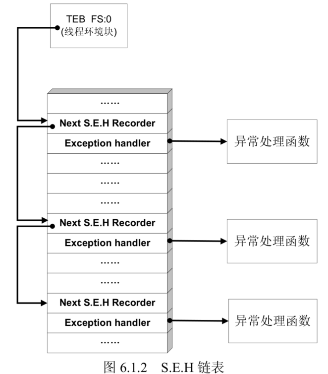
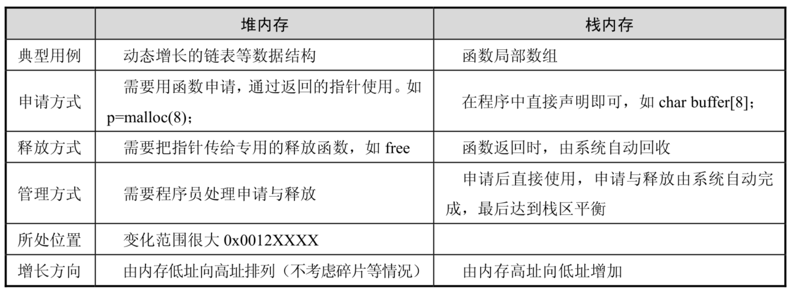
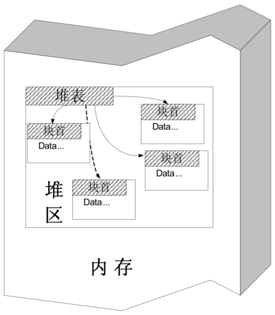
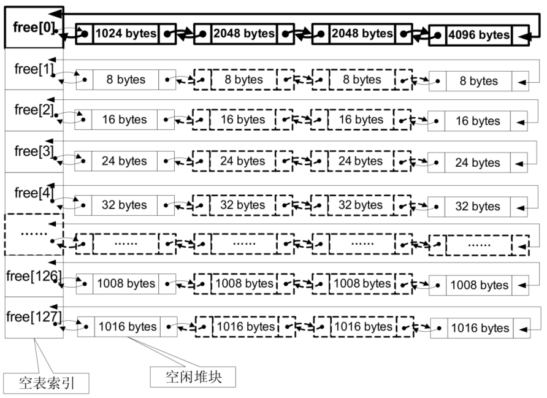
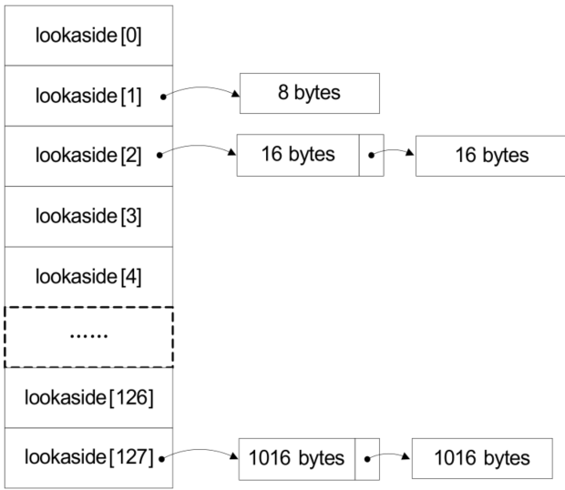
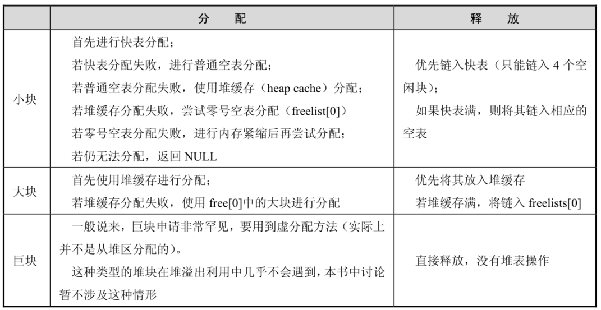
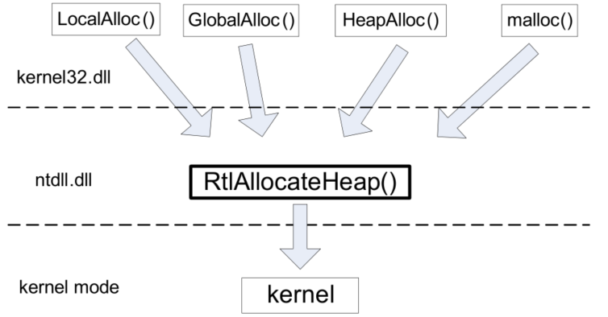
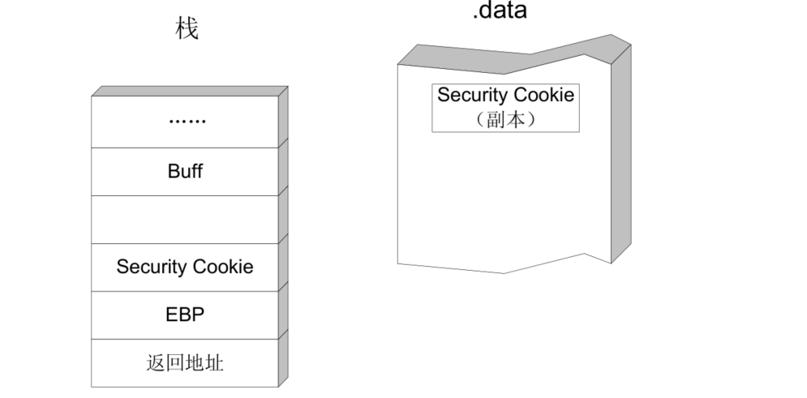

漏洞利用原理(初级)
PE文件格式
主要块(section)
- .text 由编译器产生，存放着二进制的机器代码，也是我们反汇编和调试的对象。
- .data 初始化的数据块，如宏定义、全局变量、静态变量等。
- .idata 可执行文件所使用的动态链接库等外来函数与文件的信息。
- .rsrc 存放程序的资源，如图标、菜单等。
内存攻击技术
S.E.H
S.E.H 即异常处理结构体（Structure Exception Handler）,它是 Windows 异常处理机制所采用的重要数据结构。每个 S.E.H 包含两个 DWORD 指针：S.E.H 链表指针和异常处理函数句柄，共 8 个字节

堆溢出利用
堆的特性
- 堆是一种在程序运行时动态分配的内存。所谓动态是指所需内存的大小在程序设计时不能预先决定，需要在程序运行时参考用户的反馈。
- 堆在使用时需要程序员用专用函数进行申请，如 C 语言中的 malloc 等函数、C++中的new 函数等都是最常见的分配堆内存的函数。堆内存申请有可能成功，也有可能失败，这与申请内存的大小、机器性能和当前运行环境有关。
- 一般用一个堆指针来使用申请得到的内存，读、写、释放都通过这个指针来完成。
- 使用完毕后需要把堆指针传给堆释放函数回收这片内存，否则会造成内存泄露。典型的释放函数包括 free、delete 等。
堆内存与栈内存比较

堆数据结构
堆块：出于性能的考虑，堆区的内存按不同大小组织成块，以堆块为单位进行标识，而不是传统的按字节标识。一个堆块包括两个部分：块首和块身。块首是一个堆块头部的几个字节，用来标识这个堆块自身的信息，例如，本块的大小、本块空闲还是占用等信息；块身是紧跟在块首后面的部分，也是最终分配给用户使用的数据区。
堆表：堆表一般位于堆区的起始位置，用于索引堆区中所有堆块的重要信息，包括堆块的位置、堆块的大小、空闲还是占用等。堆表的数据结构决定了整个堆区的组织方式，是快速检索空闲块、保证堆分配效率的关键。堆表在设计时可能会考虑采用平衡二叉树等高级数据结构用于优化查找效率。现代操作系统的堆表往往不止一种数据结构。

堆表主要包括：空闲双向链表 Freelist（空表)
空闲堆块的块首中包含一对重要的指针，这对指针用于将空闲堆块组织成双向链表。按照堆块的大小不同，空表总共被分为 128 条。

除free[0]为大于等于1024 字节的堆块（小于 512KB）。这些堆块按照各自的大小在零号空表中升序地依次排列下去，其余都遵循：
空闲堆块的大小＝索引项（ID）×8（字节）
快速单向链表 Lookaside:快表是 Windows 用来加速堆块分配而采用的一种堆表。这里之所以把它叫做“快表”是因为这类单向链表中从来不会发生堆块合并（其中的空闲块块首被设置为占用态，用来防止堆块合并）。快表也有 128 条，组织结构与空表类似，只是其中的堆块按照单链表组织。快表总是被初始化为空，而且每条快表最多只有 4 个结点，故很快就会被填满。

堆的三种操作
分配、释放和合并，分配和释放是在程序提交申请和执行的，而堆块合并则是由堆管理系统自动完成的。
堆块分配
- 从快表中分配堆块比较简单，包括寻找到大小匹配的空闲堆块、将其状态修改为占用态、把它从堆表中“卸下”、最后返回一个指向堆块块身的指针给程序使用。
- 普通空表分配时首先寻找最优的空闲块分配，若失败，则寻找次优的空闲块分配，即最小的能够满足要求的空闲块。
- 零号空表中按照大小升序链着大小不同的空闲块，故在分配时先从 free[0]反向查找最后一个块（即表中最大块），看能否满足要求，如果能满足要求，再正向搜索最小能够满足要求的空闲堆块进行分配（这就明白为什么零号空表要按照升序排列了）
堆块释放
释放堆块的操作包括将堆块状态改为空闲，链入相应的堆表。所有的释放块都链入堆表的末尾，分配的时候也先从堆表末尾拿。
堆块合并
经过反复的申请与释放操作，堆区很可能变得“千疮百孔”，产生很多内存碎片。为了合理有效地利用内存，堆管理系统还要能够进行堆块合并操作，当堆管理系统发现两个空闲堆块彼此相邻的时候，就会进行堆块合并操作。堆块合并包括将两个块从空闲链表中“卸下”、合并堆块、调整合并后大块的块首信息（如大小等）、将新块重新链入空闲链表。
内存紧缩（shrink the compact）：由RtlCompactHeap执行，这个操作的效果与磁盘碎片整理差不多，会对整个堆进行调整，尽量合并可用的碎片。
windows中分配释放算法
内存块根据大小分为三类
- 小块：SIZE<1KB
- 大块：1KB≤SIZE<512KB
- 巨块：SIZE≥512KB
分配和释放算法：

windows堆管理要点：
- 快表中的空闲块被设置为占用态，故不会发生堆块合并操作。
- 快表只有精确匹配时才会分配，不存在“搜索次优解”和“找零钱”现象。
- 快表是单链表，操作比双链表简单，插入删除都少用很多指令。
- 综上所述，快表很“快”，故在分配和释放时总是优先使用快表，失败时才用空表。
- 快表只有 4 项，很容易被填满，因此空表也是被频繁使用的。
综上所述，Windows 的堆管理策略兼顾了内存合理使用、分配效率等多方面的因素。
windows堆分配函数
所有的堆分配函数最终都将使用位于 ntdll.dll 中的 RtlAllocateHeap()函数进行分配，这个函数也是在用户态能够看到的最底层的堆分配函数。所谓万变不离其宗，这个“宗”就是RtlAllocateHeap()。因此，研究 Windows 堆只要研究这个函数即可。

漏洞利用原理(高级)
GS
在栈帧中压入security cookie，也叫”canery”， .data中存入副本，函数返回时进行验证操作security check，检查两者是否相等，若不相等，系统进入异常处理流程，函数不会返回。

为了性能例外情况：
- 函数不包含缓冲区。
- 函数被定义为具有变量参数列表
- 函数使用无保护的关键字标记。
- 函数在第一个语句中包含内嵌汇编代码。
- 缓冲区不是 8 字节类型且大小不大于 4 个字节。
未完待续……………